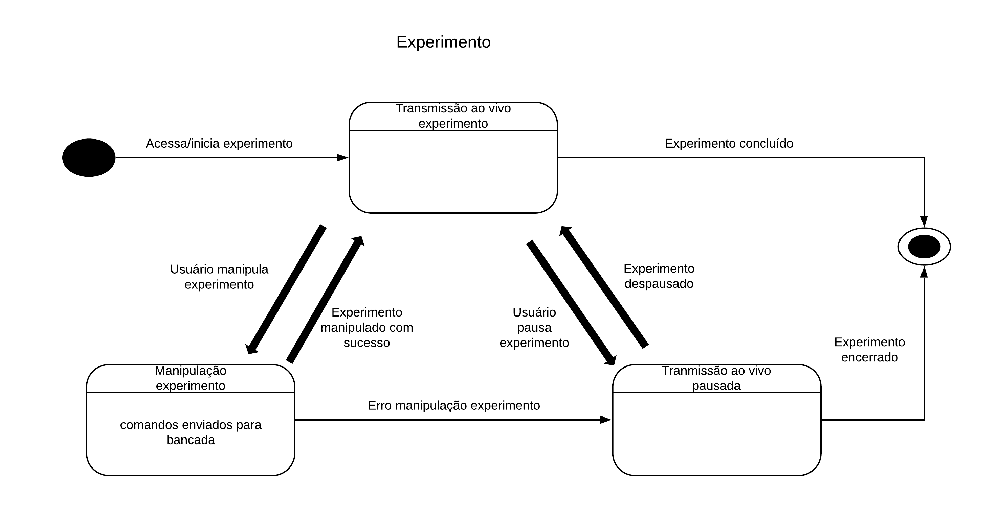
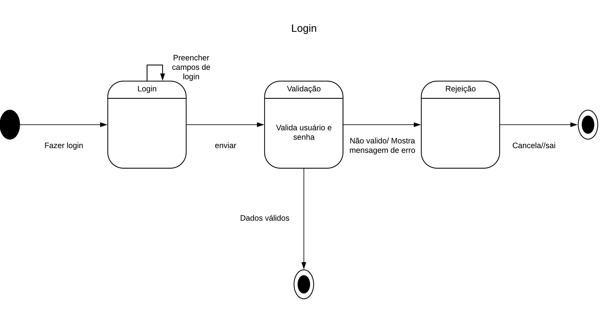

DIAGRAMA DE ESTADO
Histórico de versão
| Data | Versão | Descrição | Autor(es) |
|---|---|---|---|
| 25.04.2021 | 0.1 | Criação do documento | Carlos Eduardo |
| 27.04.2021 | 0.2 | Adição da Introdução e Metodologia | Carlos Eduardo |
Introdução
O diagrama de estados é um diagrama que reflete o comportamento designado de parte de um sistema através de estados finitos de transições. Ele ajuda a identificar os fluxos dos processos envolvidos na aplicação, onde eles começam, terminam ou se repetem até que uma dada condição seja satisfeita. O diagrama de estados é importante para mostrar para o grupo qual o fluxo da aplicação para realizar o login e o experimento.
Metodologia
A modelagem do diagrama de estados foi desenvolvida utilizando a ferramenta LucidChart pela equipe dos membros de software. Foi elaborado considerando o fluxo de uso para logar e realizar um experimento.
Diagramas

